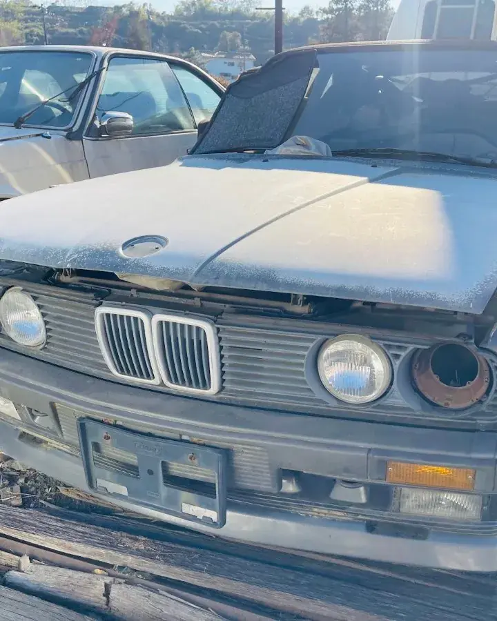

はじめて車を廃車にする方へ
廃車手続き方法・費用・必要書類

埼玉県内なら、引取りも
抹消登録の代行も無料です。
動かない車・車検切れ・事故車もOK。
引取り当日に現金でお支払いします。
廃車手続きとは
廃車手続きとは、車の登録を消す「抹消登録」のことです。車を解体して二度と使わない場合は「永久抹消登録」、しばらく乗らないだけで将来また使う可能性がある場合は「一時抹消登録」を行います。
手続きの窓口は、普通自動車なら管轄の運輸支局、軽自動車なら軽自動車検査協会です。永久抹消登録をすると、自動車税の課税が止まり、条件によっては税金や保険料の一部が戻ってきます。
自分でやる場合の流れ（普通自動車・永久抹消）
- 書類をそろえる
車検証、所有者の印鑑証明書（発行から3か月以内）、実印を用意します。 - 車を解体業者へ引き渡す
動かない車はレッカーの手配が必要です。 - 解体の報告を受け取る
解体業者から「移動報告番号」と「解体報告記録日」を受け取ります。 - 運輸支局で申請する
前後のナンバープレート2枚と書類を持って、平日の窓口で永久抹消登録を申請します。 - 還付を受ける
自動車税は後日、都道府県から通知が届きます。重量税の還付は抹消登録と同時に申請します。
必要書類
普通自動車（永久抹消登録）
- 車検証
- 所有者の印鑑証明書（発行から3か月以内）
- 実印（代理人の場合は実印を押した委任状）
- ナンバープレート（前後2枚）
- 移動報告番号と解体報告記録日
- 住所や氏名が変わっている場合は住民票など
軽自動車（解体返納）
- 車検証
- ナンバープレート（前後2枚）
- 使用者の認印（代理人の場合は申請依頼書）
- 移動報告番号と解体報告記録日
※窓口や車の状況によって必要なものが変わる場合があります。EXPORT ZONEにご依頼の場合は、必要な書類を個別にご案内します。
費用の比較
| 自分でやる・一般的な業者 | EXPORT ZONE | |
|---|---|---|
| 抹消登録の手数料 | 無料（永久抹消） | 無料（代行も無料） |
| レッカー・引取り | 数千円〜数万円かかることも | 無料（埼玉県内） |
| 解体費用 | 業者により有料の場合あり | 無料（全エリア） |
| 手間 | 平日に窓口へ・書類の準備 | 書類をお渡しいただくだけ |
| 車の値段 | つかないことが多い | 海外輸出ルートで買取 |
戻ってくるお金
抹消登録の翌月から年度末までの分が、月割りで還付されます。軽自動車税には月割りの還付はありません。
車検が1か月以上残っていれば、永久抹消登録と同時に申請することで還付されます。後から申請はできません。
保険期間が残っていれば、保険会社に解約を申し出ると返戻金を受け取れる場合があります。
EXPORT ZONEに任せる場合
LINEで車の外観と車検証の写真を送るだけで、無料で査定します。
埼玉県内は引取り無料。動かない車はレッカーで伺います。
引取り当日に現金でお支払い。抹消登録は弊社が無料で代行します。
よくあるご質問
廃車の手続きは自分でもできますか？
できます。普通自動車は管轄の運輸支局、軽自動車は軽自動車検査協会で手続きします。ただし、先に解体業者で車を解体してもらい、解体の報告が届いてから申請する必要があります。平日の日中に窓口へ行く必要があり、書類の準備にも手間がかかります。
廃車にはどれくらい費用がかかりますか？
永久抹消登録の手数料は無料です。ただし、レッカー代や解体費用を業者に支払う場合は、数万円かかることもあります。EXPORT ZONEでは解体費用と抹消登録の代行が無料、埼玉県内は引取りも無料です。
廃車の手続きに必要な書類は何ですか？
普通自動車の永久抹消登録では、車検証、所有者の印鑑証明書（発行から3か月以内）、実印（代理人が申請する場合は実印を押した委任状）、前後のナンバープレート、解体業者から伝えられる「移動報告番号」と「解体報告記録日」が必要です。軽自動車は手続きが一部異なります。
印鑑証明書の期限はありますか？
あります。発行から3か月以内のものが必要です。
自動車税や重量税は戻ってきますか？
普通自動車は、抹消登録をした翌月から年度末までの自動車税（種別割）が月割りで還付されます。車検が1か月以上残っている場合は、永久抹消登録と同時に申請すると自動車重量税も還付されます。軽自動車税には月割りの還付はありません。
動かない車や車検切れの車でも廃車にできますか？
はい。EXPORT ZONEではエンジンがかからない車、車検切れの車、事故車もレッカーで引取りに伺い、買取いたします。
廃車にする車でも値段はつきますか？
つく場合が多くあります。弊社は海外への輸出ルートがあるため、国内では値段がつきにくい古い車や過走行の車でも、買取価格をご提示できることがあります。